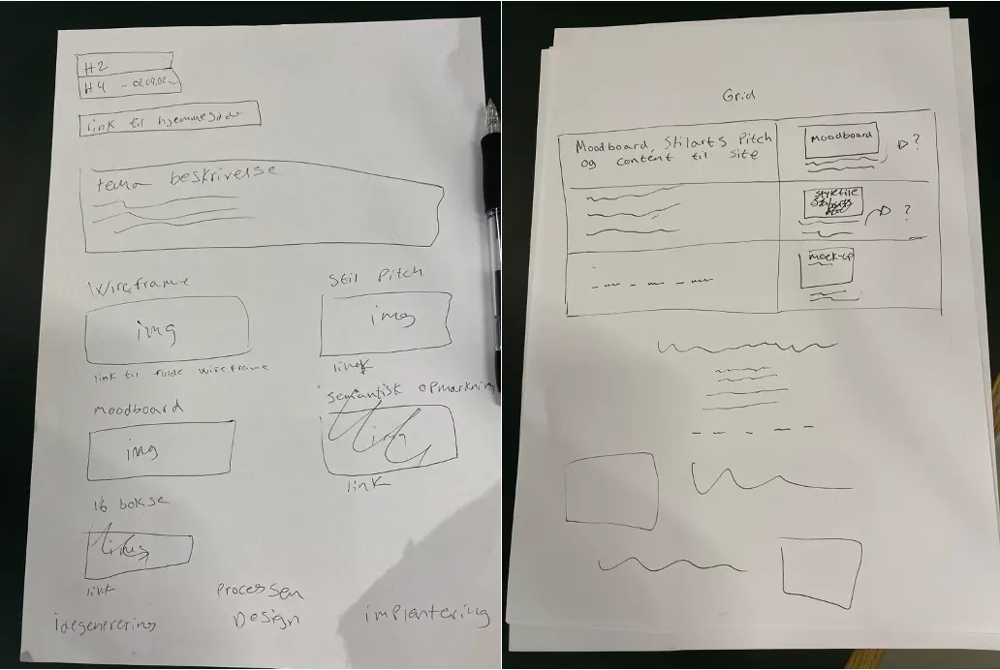
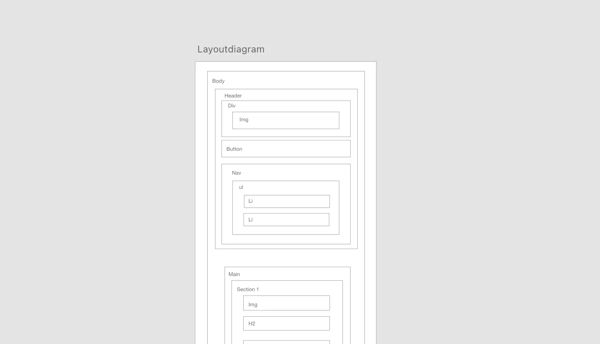

1. fase
IDEGENEREING OG STIL
I 1. fase startede jeg ud med at oprette en trello, dette gav
mig struktur og overblik over tema 6, til at kunne starte på mit
protfolio-site. Indtil nu har jeg på semesteret udfordret mig selv
stilmæssigt. Derfor har jeg nu valgt at udtrykke mig med den stil
som beskriver mig bedst. Ved hjælp af research og brainstorm,
fandt jeg frem til at benytte mig af minimalistisk stil, som
står i kontrast til alle mine andre projekter, som ”larmer”.
Minimalisme er en stilart, der er kendetegnet ved at minimere
(eller reducere) værkets udtryk, dvs. at gøre det så enkelt så
muligt. Jeg har tidligere fået feedback på mine projekter manglede
”whitespace” så det har jeg implementeret i mit portfolio. Med
minimalt webdesign, er fokus sat fast på indholdet, det vil sige
formålet med mit site er at det ikke skal distrahere fra min
projekter. Dette blev også grundlaget for mit sort/hvid design. Jeg
bengyndte herefter at tegne små sketches på papir.
- trello -
Se opgaver
Trello
1.sketch og 2. sketch
2. fase
DESIGN, SKETCHING, MOCK-UP OG LAYOUTDIAGRAM
Herfra begyndte designfasen, hvor jeg lavede et
styletile i adobe xd, her fik jeg font, farver og stil på
plads hvor jeg herfra designede og tegnede mine
UI-elementer samt andre elementer der skulle implementeres på
mit site. Jeg valgte at runde alle mine kanter på mine
knapper(bouba), for at skabe et roligt udtryk, dette høre dog
ikke inde under det minimalistiske udtryk. I mine første sektioner
valgte jeg, at i mine temaer skulle jeg have et lille "resume", som
jeg ville kode ind med html og derefter style med en cirkel i CSS.
Designmæsssigt blev det ikke som jeg havde forestillet mig og jeg
endte med at tegne og designe dem i illustrator og indsætte dem som
svg´er.
Jeg valgte at min font på hele sitet skulle være en
serfi, som er typsik for minimalistisk design.
Alt dette blev mit grundlag for mit mock-up som jeg
også designede i adobe XD. Da jeg havde mit koncept, stil og mock-up
fastlagt begyndte jeg at udarbejde et layoutdiagram for min
forside.
- Adobe XD - Adobe illustrator -
Opgaver
Styletile
Mock-up
Layoutdiagram
3. fase
IMPLEMENTERING
Den sidste fase gik ud på at implementere alt i
HTML, CSS og javascript. Jeg valgte her at oprette
forskellige sider til de forskellige projekter samt CSS. Målet var
her for mig at fokusere på at implementere de ting jeg har lært på
1. semester i mit portfolio.
Ved hjælp af javacsript og CSS fik jeg lavet
burgermenu, tilbage til projekter og ved hjælp af den erfaring
jeg havde fået fik jeg uarbejdet en "back to top" knap. Jeg implementerede min UI elementer, min font, farver, tekst,
headlines, links samt billeder som jeg omformede til webp i
"squoosh". Som til sidst munede ud i mit portfolio-site.